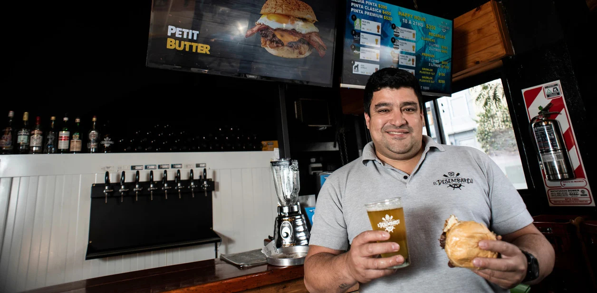
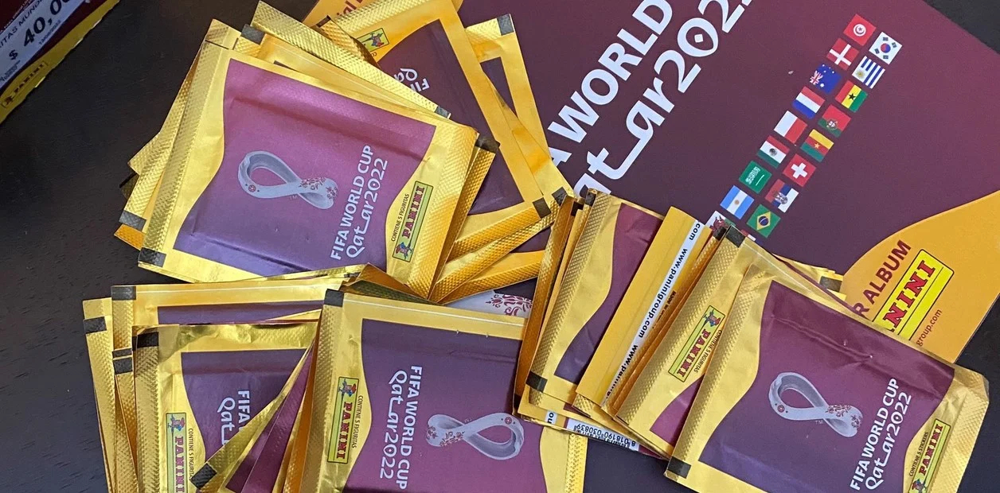

Guardia alta
De 3 a 9 años de cárcel
AFIP denunció a Susana Giménez por presunta evasión de impuestos y podría pagar hasta 300 millones de pesos

Es por una deuda de 2019 relacionada con Bienes Personales. Para la diva, el impuesto es 'confiscatorio'.
Emprendedor
Llegó a Buenos Aires con 300 pesos y armó una cadena de hamburguesas gourmet: cómo hizo
Es Julio Gauna, un santafesino que vivió en Mar del Plata y llegó a Buenos Aires a los 22 años. El el dueño de El Desembarco, que también está por abrir en Montevideo.
Tiene un año
Tucumán: internaron a un bebé por intoxicación con cocaína y detienen a sus padres
La justicia investiga cómo accedió el chico a la droga. Permanece en grave estado.
Guerra Rusia-Ucrania
Irán le entregó decenas de drones kamikazes al ejército de Putin para reforzar sus ataques
Todo lo que tenes que saber de la guerra en Ucrania, minuto a minuto.
Pasión de multitudes
Tinder de figuritas: el revolucionario método del argentino que llenó el álbum del Mundial en tan sólo 8 días
Se llama Francisco Dipietro, es estudiante universitario y desarrolló un sistema colaborativo y muy eficiente para intercambiar los cromos de Qatar 2022.
Tres por uno